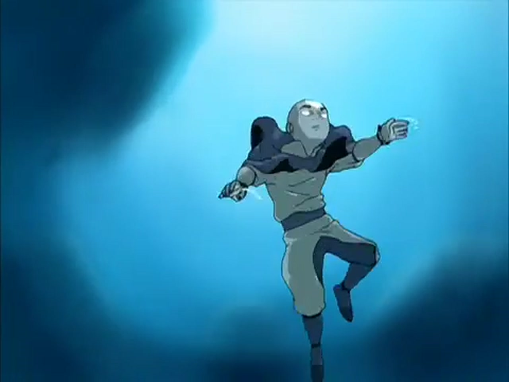

Uma experiência pelos quatro elementos
O último dobrador de ar
Há cem anos, o mundo perdeu o equilíbrio. Agora, um garoto de doze anos precisa dominar os quatro elementos — e aprender o que significa ser o Avatar.
Livro zero · O chamado
Quando o mundo mais precisava dele, ele voltou.
Preso em um iceberg por um século, Aang desperta em um mundo transformado pela guerra. Ao lado de Katara, Sokka, Toph e muitos aliados improváveis, ele atravessa continentes para dominar os elementos sem abandonar sua natureza pacífica.
Mais do que uma história sobre poderes, Avatar é uma jornada sobre amizade, responsabilidade, identidade e a coragem de escolher um caminho diferente.
elementais
na jornada
conectadas
desequilíbrio
O ciclo do Avatar
Água. Terra. Fogo. Ar.
O Avatar renasce seguindo uma ordem ancestral. Cada vida carrega a experiência das anteriores e a missão de construir uma ponte entre o mundo físico e o mundo espiritual.
Água/Terra/Fogo/Ar
Um mundo, quatro formas de viver
As quatro nações
Cada povo transformou seu elemento em cultura, arquitetura, filosofia e movimento. Selecione uma nação ou percorra a jornada completa.
Liberdade · Espírito · Movimento
Nômades do Ar
Um povo pacífico, espiritual e desapegado, organizado ao redor de quatro templos elevados. Seus movimentos circulares evitam o confronto direto e transformam defesa em liberdade.
- Territórios
- Templos do Ar do Norte, Sul, Leste e Oeste
- Dobra
- Evasiva, veloz e baseada em redirecionamento
- Representantes
- Aang, Monge Gyatso e os nômades
- Fonte
- Bisões voadores
Leve como o vento; firme apenas no propósito.
Mudança · Comunidade · Cura
Tribos da Água
Do gelo polar aos pântanos, seus povos prosperam pela cooperação. A dobra acompanha o fluxo da energia, alternando suavidade e força como as marés guiadas pela lua.
- Territórios
- Polos Norte e Sul e o Pântano Nebuloso
- Dobra
- Fluida, adaptável, ofensiva e curativa
- Representantes
- Katara, Sokka, Yue e Mestre Pakku
- Fonte
- Lua e oceano
A força da água está em aceitar a mudança.
Substância · Resistência · Permanência
Reino da Terra
A maior e mais diversa das nações. De Omashu a Ba Sing Se, sua identidade nasce da capacidade de suportar, observar e agir no instante exato — sem ceder terreno.
- Territórios
- Ba Sing Se, Omashu e incontáveis províncias
- Dobra
- Direta, enraizada e de golpes decisivos
- Representantes
- Toph, Rei Bumi e Avatar Kyoshi
- Fonte
- Toupeiras-texugo
Ouça o chão. Espere. Então permaneça inabalável.
Poder · Vontade · Transformação
Nação do Fogo
Uma potência insular moldada pela disciplina e pela indústria. A guerra corrompeu sua ambição, mas a verdadeira dobra de fogo nasce da respiração, da vida e da energia interior.
- Territórios
- Arquipélago vulcânico e antigas colônias
- Dobra
- Explosiva, precisa e movida pela respiração
- Representantes
- Zuko, Iroh, Azula e os Guerreiros do Sol
- Fonte
- Dragões
O fogo pode consumir — ou iluminar um novo caminho.
Aliados, mestres e adversários
Personagens que mudaram o mundo
Abra uma ficha para conhecer habilidades, personalidade e o arco de cada personagem.
A jornada em três atos
Os três livros
Da descoberta no gelo ao confronto sob o Cometa de Sozin, cada capítulo aproxima Aang do domínio — e de sua própria resposta.
01
20 episódios
Livro Um: Água
Aang é encontrado por Katara e Sokka. O grupo cruza o mundo rumo ao Polo Norte enquanto Zuko os persegue e a ameaça da Nação do Fogo se revela.
- O menino no iceberg
- Templo do Ar do Sul
- Cerco do Norte
02
20 episódios
Livro Dois: Terra
Toph se torna a mestra de Aang. Entre a perseguição de Azula, os segredos de Ba Sing Se e a busca por Appa, o equilíbrio parece mais distante.
- A bandida cega
- A biblioteca
- Encruzilhada do destino
03
21 episódios
Livro Três: Fogo
Disfarçados em território inimigo, os amigos se preparam para o fim da guerra. Zuko muda de lado, Aang encontra seu caminho e o cometa chega.
- O dia do sol negro
- Os mestres do fogo
- O cometa de Sozin
Confie no primeiro impulso
Qual elemento vive em você?
Escolha a qualidade que mais orienta suas decisões. O resultado muda a energia desta experiência.
Seu elemento é
Ar Você encontra força na liberdade, na criatividade e em novos pontos de vista. Conhecer sua nação >